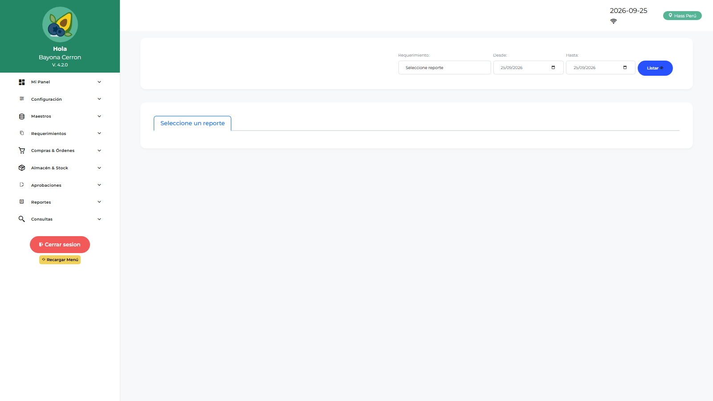

Manual de Usuario — Jefe Licitaciones (JEMLOGIST)
| Campo | Valor |
|---|---|
| Código de rol | JEMLOGIST |
| Nombre | Jefe de Licitaciones / Empaque |
| Pantalla inicial | Dashboard Jef. Licitaciones (/main/dashboard-jemlogist) |
| Video tutorial | ../video-tutoriales/VIDEO_TUTORIAL_JEMLOGIST.html |
1. ¿Quién eres?
Eres la jefatura del área de licitaciones/empaque. Tu función principal es aprobar órdenes de compra y de servicio dentro del flujo, supervisar el dashboard operativo y dar conformidad de servicios.
2. Acceso
Login → Dashboard Jef. Licitaciones: indicadores de OC/OS pendientes de tu aprobación, montos y estado de licitaciones.

3. Pantallas disponibles
| Pantalla | Qué haces |
|---|---|
| Dashboard Jef. Licitaciones | Tu panel de control |
| Dashboard Operativo | Estado de requerimientos operativos |
| Dashboard Finanzas | Visión financiera de órdenes |
| Aprobación OC | Aprobar/rechazar órdenes de compra |
| Aprobación OS | Aprobar/rechazar órdenes de servicio |
| Conformidad de Servicios | Conformar servicios ejecutados |
| Devoluciones de Consumo | Revisión de devoluciones |
| Reporte Requerimientos / Logístico / Catálogo | Consultas abiertas |
4. Procedimientos frecuentes
Aprobar una Orden de Compra
- Menú → Aprobaciones → Aprobación OC.
- Lista de OC pendientes → abre la orden.
- Revisa proveedor, líneas, montos y adjuntos (cotizaciones, PDF).
- Aprobar (avanza en el flujo) o Rechazar (con motivo → vuelve a logística).

Aprobar una Orden de Servicio
Mismo flujo en Aprobación OS, revisando el detalle del servicio y la solicitud origen.
Conformidad de servicio ejecutado
- Conformidad de Servicios → selecciona la OS ejecutada.
- Registra la conformidad (cantidades/fechas) → queda lista para cierre.
5. Restricciones
- No creas requerimientos ni gestionas compras/cotizaciones (eso es LOLOGIST).
- No accedes a almacén, aprobaciones por área ni administración.
6. Problemas comunes
| Problema | Solución |
|---|---|
| No veo una OC pendiente | Verifica que LOLOGIST la haya enviado a aprobación y que el flujo te incluya |
| Rechacé por error | Contacta a ADLOGIST/TILOGIST para revisar el estado y reenviar |